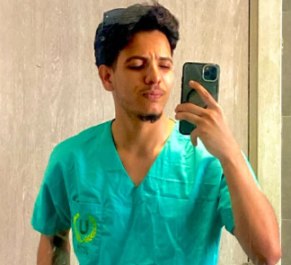

Étudiant en Physiothérapie
22 ans • 1ère année — UPSAT

Étudiant en première année de Physiothérapie à l'UPSAT, dynamique et rigoureux, alliant des connaissances théoriques en cours d'acquisition à une première expérience pratique de stage au CHU Sahloul. Doté d'un esprit entrepreneurial renforcé par des formations en marketing digital et e-commerce, je souhaite mettre ma polyvalence et mon sens relationnel au service de votre établissement de soins.
Apprentissage des bases fondamentales : anatomie, physiologie, soins de rééducation et initiation clinique.
Diplôme d'accès à l'enseignement supérieur en sciences de la santé.
Acquisition de compétences en stratégies marketing, publicité en ligne, copywriting et e-commerce.